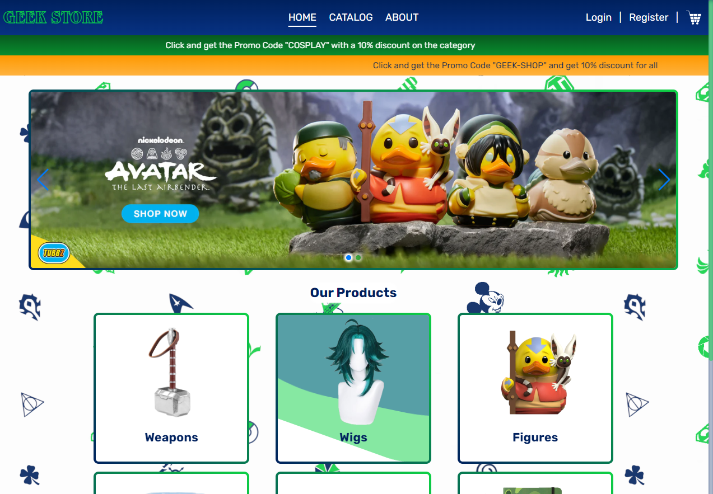
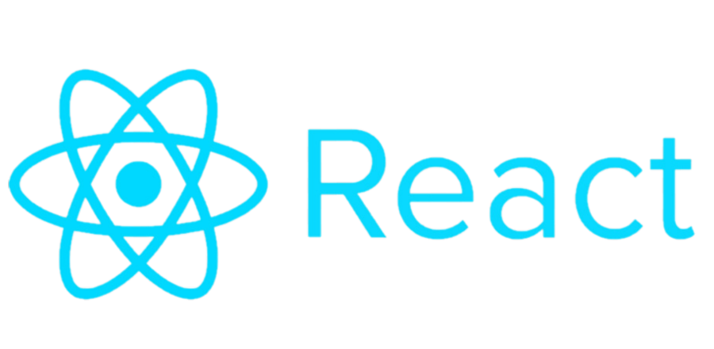
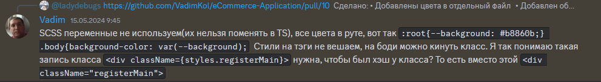
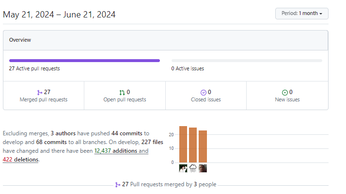
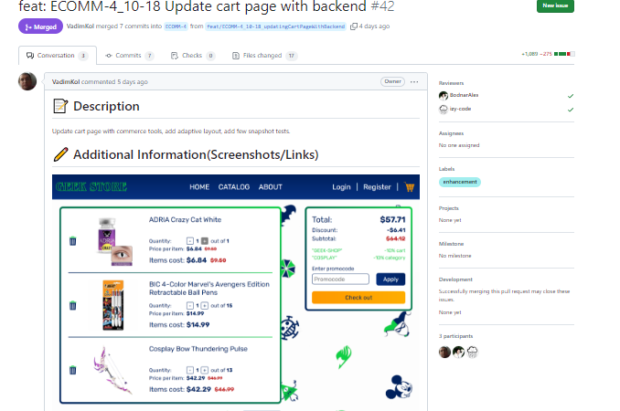

Презентация проекта
Geek Store
Проходимцы
Девиз:
Пройдем через все преграды!
Выбор тематики
- Спортивная одежда
- Электроника
- Мебель
- Азиатская еда
GEEK-STORE
Командные усилия
Еще до начала старта первого спринта мы собирались и совместно изучали React.
Дизайн
Дизайн - это наша совместная работа.

Акцент
Первый вид макета
Окончательный вид первого дизайна
Третий спринт
Финальный вид
Вклад команды
- Опыт участников
- Коллективное обучение
- Взаимопомощь
- Взаимоподдержка
Опыт участников
- Вадим: TSQL developer, прошел курс разработчика Frontendblok
- Иван: Java, прошёл профессию «Фронтенд-разработчик» HTML Академии
- Александра: PHP, C++, Python, Wordpress, прошла курс разработчика W3C
Коллективное обучение
Коллективное обучение
Взаимопомощь

Взаимоподдержка

Взаимоподдержка


Взаимоподдержка

Координация проекта
Планирование и выполнение задач происходило в Jira.

Скрам-доска

Диаграмма суммарного потока
Пример задачи
Принципы распределения задач
- Опыт в решении подобных задачах
- Работа без блокирования команды
- Планы и временные обязательства на текущем спринте
- Загруженность в предыдущем спринте
Временные диапазоны задач

Поддержка коммуникации
Каждые два дня мы собирались в Discord

Реальные сценарии
- Настройка VS Code для быстрого форматирования с помощью горячих клавиш
- Переназначение задачи после скрама. Задача "Навигация по подкатегориям"
Показатели активности
Показатели проекта

Динамика изменений
Ветка спринта 4

Примеры PR
Настройка проекта
Используемые технологии
Спасибо за внимание, готовы ответить на ваши вопросы!
- Ссылка на деплой проекта
- GitHub репозиторий проекта
- GitHub аналитика
проекта